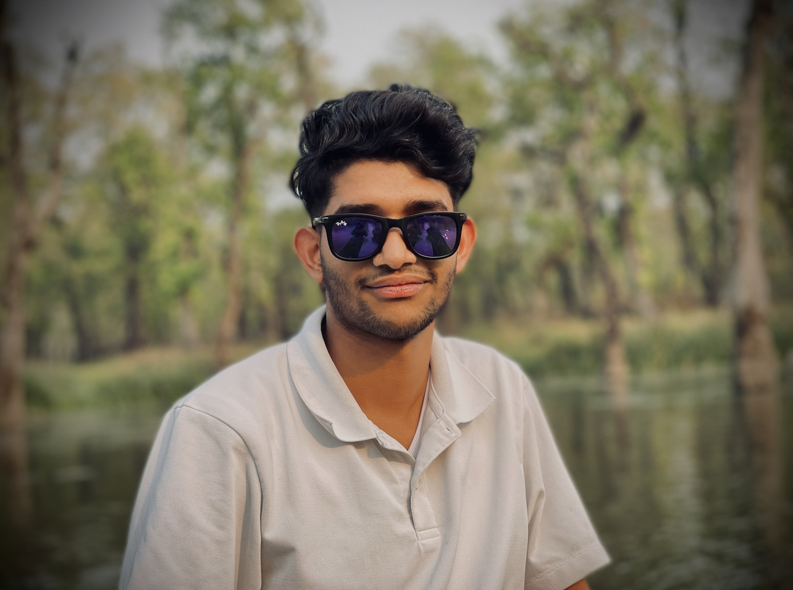

Suman Gaire Portfolio
Hi, I am a beginer web developer.
I'm suman Gaire, 20 years old University student studying Bsc Bachelor in Business economics with Marketing in Dundee University

Edcation
- Certificate of Higher Education: Computing, Business and Accounting,
04/2021 - 03/2023
India International School in Japan - Tokyo
A- level Computing Graduate with Business and Economics also A- level Graduate in Accountancy
- Bachelor of Science: Bachelor’s in business economics with Marketing,
01/2024 - Current University of Dundee - Dundee
Coursework includes Financial Analysis, Business Accounting, Marketing Fundamentals, and Modern Economy.
First-year achievements include passing Finance and Business Accounting modules with high marks.
Work Experiece
Customer service representative,
04/2024 - Current RAMA THAI Dundee - Dundee, Dundee City
- Resolved complex customer issues, consistently exceeding sales targets, and enhancing operational efficiency through analytical problem- solving.
- Analyzed customer feedback to identify process improvements, providing actionable recommendations to management.
- Demonstrated strong communication and stakeholder management skills, crucial for interacting with internal teams and auditors.
Certification
IEUK 2024 Business Operations and marketing with Bright Network
Certified in Bright Network's Internship Experience UK 2024 for Business Operations and Marketing, gaining practical experience with leading multinational companies. Developed key skills and industry insights through hands-on tasks and professional workshops
certificatelink